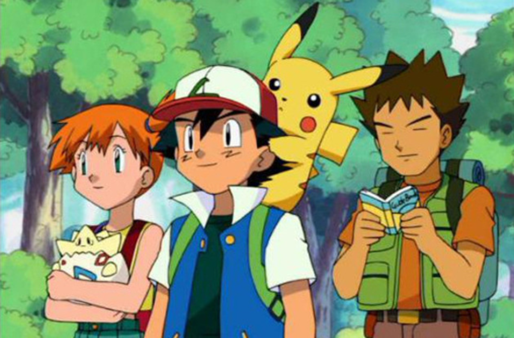

The anime series focuses around a boy named Ash Ketchum and his partner Pikachu on their journey to become a Pokémon Master. The main catchphrase of the show might be to "Catch them all!" but the main goal of Ash is to become a Pokémon Master. He goes through different regions, fights in different competitions and meets tons of Pokémon and people along the way.
This is a list of the main series that continue Ash's journey. The anime recently "ended" since Ash finished his journey and the show now has new protagonists.
Ash's story begins with him waking up late for the day he is supposed to choose a starter Pokémon to go on his Pokémon journey with him. At the age of 10, children are encouraged to begin their Pokémon journey. Upon arriving to the Pallet Town Lab run by Professor Oak, he finds that the only Pokémon left is Pikachu, and the original three starters: Charmander, Bulbasaur, and Squirtle, have all been taken by other trainers. He struggles with Pikachu at first, but they eventually bond and build a relationship that lasts forever.
The Pokémon regions that Ash travels through are more or less the same as the RPG games. You travel throughout the region and reach different cities with intent to fight their gym leaders and gain gym badges to win particiption in the Pokémon Champion League. Along the way, you build a team of Pokémon and train them to be strong enough to fight. In the show, there are also villans who chase Ash, with intent to take his Pikachu, due to a grudge and fascination with Pikachu from one of the first episodes. The main Team Rocket members who chase Ash are James, Jessie, and their Pokémon Meowth, who is able to talk and operates as an independent without a trainer. Ash also learns as he travels, either about Pokémon techniques, skills, characteristics or Pokémon themselves.